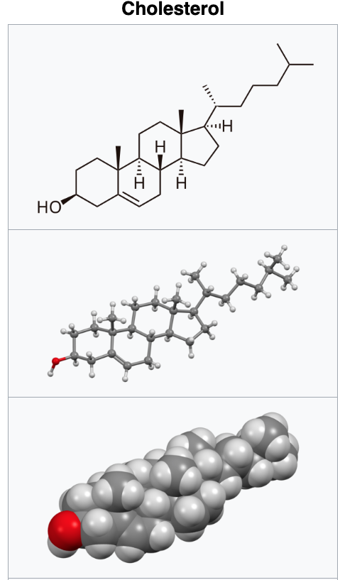

Sterol is an organic compound with formula C17H28O, whose molecule is derived from that of gonane by replacement of a hydrogen atom on C3 position by a hydroxyl group. It is therefore an alcohol of gonane. More generally, any compounds that contain the gonane structure, additional functional groups, and/or modified ring systems derived from gonane are called steroids. Therefore, sterols are a subgroup of the steroids. They occur naturally in most eukaryotes, including plants, animals, and fungi, and can also be produced by some bacteria (however likely with different functions). The most familiar type of animal sterol is cholesterol, which is vital to cell membrane structure, and functions as a precursor to fat-soluble vitamins and steroid hormones.
While technically alcohols, sterols are classified by biochemists as lipids (fats in the broader sense of the term). 
The structure of the tetracyclic ring of cholesterol contributes to the fluidity of the cell membrane, as the molecule is in a trans conformation making all but the side chain of cholesterol rigid and planar. In this structural role, cholesterol also reduces the permeability of the plasma membrane to neutral solutes, hydrogen ions, and sodium ions.